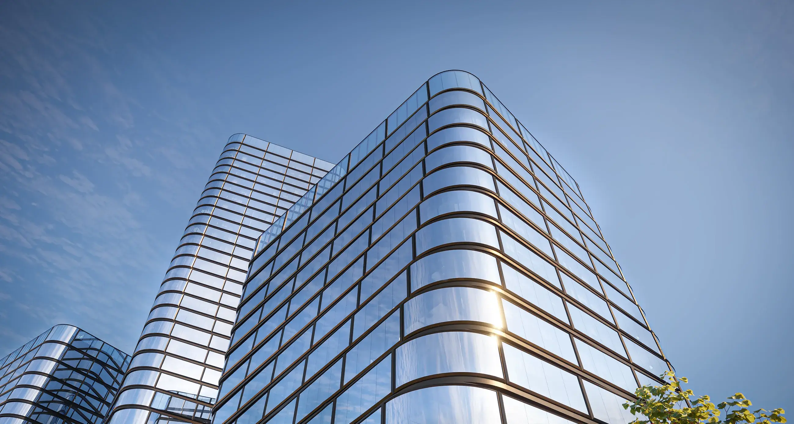

Business is built on choosing optimal solutions. The premium AIR business center comprises three buildings of varying heights — from 14 to 34 floors — and offers ultra-modern, next-generation office spaces.

B120 floors
B234 floors
B314 floors

Business is built on choosing optimal solutions. The premium AIR business center comprises three buildings of varying heights — from 14 to 34 floors — and offers ultra-modern, next-generation office spaces.
B120 floors
B234 floors
B314 floors
Developed by TEKTA professionals and managed by Commonwealth Partnership experts, AIR becomes a solid foundation for businesses of any scale and ambition.


Here, private investors, IT startups, regional companies opening offices in the city, and many other forward-looking organizations will find space to strengthen their financial positions.
A large corporation can reach a new level by establishing a representative headquarters in Building 3.
Learn more ›
Aesthetics as the highest form of pragmatism. The architecture of AIR embodies the rhythm of the present, reflecting the social and business dynamics of the capital.
The distinctive style of AIR was created by ADM, a leading architectural studio specializing in contemporary urban design.


1/ 3
Panoramic curved glazing. Energy-efficient windows with Schüco profiles.
A column grid of 8.4 × 8.4 meters in a single span.
Panoramic vistas of city towers and Khodynskoye Field Park.
In typical office buildings, floor plans are utilitarian and centered around a core that houses staircases, elevator shafts, and engineering systems. At AIR, this challenge is solved in an elegant, high-tech way: the core and the structural column grid "rotate" together with the building facade.


All offices at AIR maintain correct geometry and commercial efficiency. At the same time, each floor — with its staircases and utilities — is slightly rotated around the vertical axis relative to the previous one.
The distinctive architecture of AIR effectively communicates the image and values of any progressive corporation. Recognizing this PR and GR potential, we designed the third building as the most advanced headquarters in the Leningradsky business district.

1/ 3
The 14-story tower is designed specifically as the headquarters of a large company and is fully autonomous.
Its engineering systems are either independent (ventilation and air conditioning), supplied via separate networks (water and heating), or designed to be isolated when necessary (servers and dispatch systems).
A company that establishes its headquarters in AIR’s third tower can shape its own service infrastructure and independently define the building management model and contractors.

The bespoke design by HAAST architectural bureau envisions spacious double-height lobbies with high ceilings and panoramic glazing in each tower.


The infrastructure of each AIR tower is fully self-sufficient. The ground floors feature commercial spaces with floor-to-ceiling display windows and 4.71 m ceiling heights — restaurants, cafes, pharmacies, luxury beauty salons, flower and wine boutiques. Towers are designed according to the Dry Step principle.


Privileges define status.
At AIR, exceptional attention to residents and care for their well-being and privacy are felt throughout every space.
Wide parking driveways, silent VIP elevators, adaptive climate control, and high-speed Wi-Fi across the entire business center — pursuing ambitious goals here is not only prestigious, but genuinely comfortable.

From electric vehicle charging stations to advanced security technologies, premium service at AIR is elevated to a guiding principle.
Premium
technologies
Sword elevators with speeds of up to 5 m/s and a maximum waiting time of 40 seconds. Zoning of elevator groups in Buildings 1 and 2 reduces waiting times and minimizes stops.
An underground parking facility with 490 spaces. Ceiling height in the main driveways on level −1 is 3.1 m, ensuring comfortable vehicle access.
Priority access for executives and top management of companies occupying large office blocks. Travel to the required floor is direct, without transit stops.
The project provides a convenient area for passenger pick-up and drop-off at the building entrance.
Multiple elevator zones in each tower reduce waiting times, minimize stops, and enhance ride comfort.
Dedicated spaces with charging stations or the option to install them are provided.
24/7 · Face ID, BLE/NFC/QR turnstiles, license-plate + RFID.
Innovative
engineering
Air exchange ≥ 60 m³/hour per person.
≥ 100 W per sq m, three-phase.

The ecology
of successful
business
AIR meets the CLEVER eco-certification standards at the Gold level. The practices applied in the design, construction, and operation of the towers comply with ESG principles.
The environmental performance of the premium business center aligns with the internal policies of progressive corporations, as well as the requirements of their regulators and industries. Most importantly, it creates a comfortable and healthy working environment for every employee.

The well-considered structural design of the towers allows AIR to flexibly adapt. Units on a floor can be combined. Residents can purchase a single office, an entire floor, or even a whole building.
A consistent column grid of 8.4 × 8.4 m allows for efficient use of space. There is no second row of columns or pylons along the office corridors, ensuring optimal office depth and enabling effective layout solutions.

Corner units with curved panoramic glazing and 270-degree views offer breathtaking vistas of Khodynskoye Field Park.

All office spaces are delivered in Shell & Core condition. Each office is equipped with in-floor convectors and allows for the installation of a raised floor.

Ceiling height on typical floors is up to 3.96 m, and up to 4.6 m on the top two floors.


The regular geometry of the 79 m² office allows for efficient use of space and the creation of an ergonomic work environment.

An office of 136.1 m² enables workspaces with abundant natural daylight. An added benefit is impressive evening views of Khodynsky Park and the surrounding cityscape.

The generous 220.4 m² area and corner panoramic glazing allow for optimal zoning, opening picturesque views from almost any point in the office.

Corner panoramic glazing in the 340 m² office provides maximum natural daylight during the day and refined views of the city in the evening.

Thanks to the spacious 763.4 m² area, the office layout allows for easy zoning, while panoramic glazing fills the space with sunlight. Larger offices are primarily located on the upper floors, offering scenic views.

The 1566.7 m² full-floor layout enables efficient zoning into work and relaxation areas. Panoramic glazing on a high floor ensures excellent daylight exposure and offers the best views of the city.